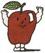
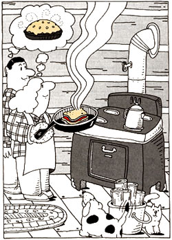
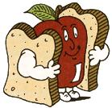

From Mother No. 17
Behold a veritable triumph of culinary creativity.
Prowley Snooker's Original
Dear MOM,
Divine inspiration hits us all one time or other. Mine came after toting 100 pounds of food uphill to our cabin. I was fighting off exhaustion with the thought of the hot apple pie we'd have for supper, but at the top, my lady informed me you can't bake pies on a woodstove without chopping down a half acre of God's own trees for fuel. My depression was humongous, and I shuffled downhill for a second load. Then the Great Spirit came to the rescue, saying, "Country pie freak, despair not, but slice and parboil your softest apples and add brown sugar and cinnamon in the righteous fashion . . . then make light brown toast . . . slice up strips of goodly cheese, lay them around the perimeter of the toast, dump your apple mix in the center, and cap with another toast . . . then fry in a buttered skillet till the cheese melts and becomes a sealer . . . behold . . . hot pie sandwich!"
Back at the hilltop, I related the vision to my lady, who forthwith made it reality. We were fulfilled!
|
 |
 |
 |